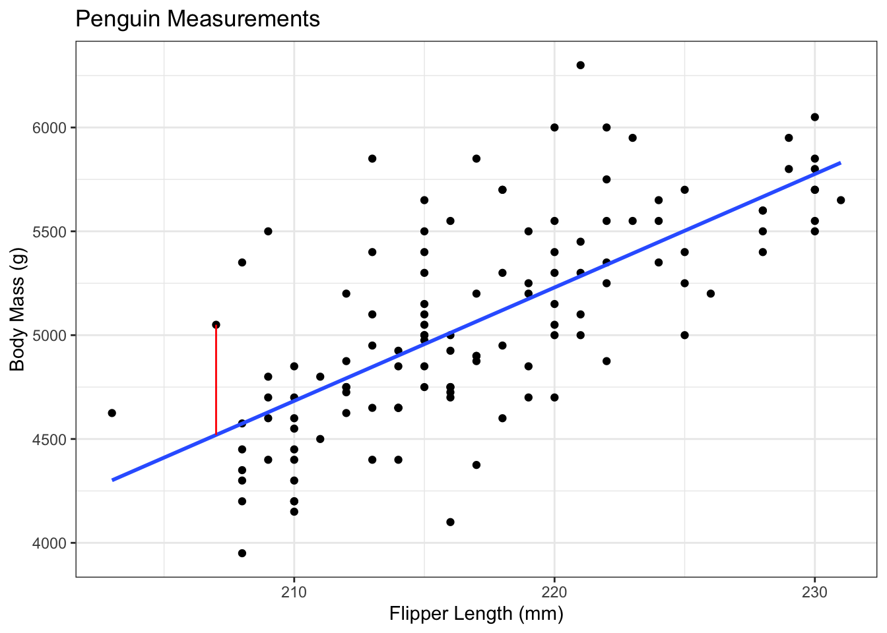

19 Inference for Regression
19.1 Return to Regression
In the lessons on regression, there was a recurrent theme: if the correlation was 0, then the slope was 0 (and vice-versa, since \(b = rs_y/s_x\)). However, in real data the correlation is never exactly 0. How do we know if it’s “close enough” to 0 to say that there’s no correlation between \(x\) and \(y\)? By comparing it to a standard error, of course!
After the previous lesson (the Chi-Square test), this lesson is a return to form. We’re going back to t-tests! Hooray! But first, let’s do a quick recap on regression.
19.2 Regression Recap
In regression, we’re trying to find parameters \(a\) and \(b\) in the equation \(y = a + bx\) to make sure that the fitted line is as “close” to the observed data as possible.
To find the line of best fit, we minimize the sum of squared errors, \(\sum(y_i - \hat y_i)^2\), where \(\hat y_i\) is the height of the line that we get if we plug the \(x\) value into the model. The fact that we minimize the squares is not important, but it is important that it’s based on the quantity \(y_i - \hat y_i\), called the residuals.
For example, consider the penguins data that we looked at earlier. In these data, we’re trying to predict the body mass of a penguin based on their flipper length. This is useful to field researchers, since measuring flipper length is much easier than weighing a penguin and still gives them some idea of how much that penguin might weigh.
The blue line is the line of best fit, which was estimated as: \[ body\_mass_i = -6787.28 + 54.62*flipper\_length_i \]
The slope is 54.62, meaning that the weight of the penguin increases, on average, by 54.62 grams for each 1mm increase in the flipper length. In other words, if we look at all pairs of penguins that had flipper lengths that were 1mm apart, the average difference in their body masses would be something like 54.62.1
The slope was calculated using our formulas from before. The correlation between flipper length and body mass is 0.7027, the standard deviation of flipper length is 6.4850, and the sd of body mass is 504.1162. Putting these together, the slope is \(0.7072 * 504.1162 / 6.4850 = 54.9747\). This is slightly off because of rounding - I calculated this one by hand, but the slope in the equation above was calculated with R.
The intercept of this model is -6787.28, which could be interpreted as saying that a penguin with a flipper length of 0 should have a body mass of about -7kg, but this isn’t how we should interpret this value.2 This intercept simply exists to shift the line up or down in order to best fit the cloud of points.
This interpretation of the intercept as a “nuisance” parameter3 can be seen in the way we calculate it. The calculation is \(a = \bar y - b\bar x\), i.e., the intercept is calculated to ensure we have a line with slope \(b\) that goes through the point \((\bar x, \bar y)\) on the plot.
The red line represents the residual for one of the penguins. This particular penguin had a flipper length of 207, leading to a predicted body mass of \(-6787.28 + 54.62*207 = 4519.06\). This particular penguin had an actual body mass of 5050, giving a residual of \(5050 - 4519.06 = 530.94\).
19.3 Inference for the Slope Parameter
You may have noticed a word show up several times in that recap: “average”. The intercept passes through the average of x and the average of y, and the slope is the average increase in \(y\) for a one-unit increase in \(x\). Linear regression is essentially just a 2 dimensional average!
As you might guess from this fact, we’re going back to t-tests! We still have the exact same test statistic: \[ t_{obs} = \frac{\text{Observed} - \text{Hypothesized}}{\text{Standard Error}} \] We just have to decide on the hypotheses and calculate the standard error!
As noted above,4, the slope is 0 when the correlation is 0. In general, we are checking the hypotheses: \[\begin{align*} H_0: \beta = 0\text{ vs. }H_a: \beta\ne 0\\ \end{align*}\] We are now equipped to fill out the test statistic: \[ t_{obs} = \frac{b - 0}{\text{Standard Error}} \] We can just plug that into a calculator and get a result, right? Wait, something might be missing.
In this class, we won’t even write out the equation of the standard error. This is the sort of thing software was designed to do for you. By now, you should be able to explain the concept of the standard error to a grandparent; it’s a central part of everything we’ve done since the midterm. You should also know why it decreases with a larger sample size, and how this affects the test statistic and p-value! However, it’s fine to skip over the actual value for now and simply trust that statisticians are smart.
With the Standard Error being calculated by software, this hypothesis test works exactly the same as the test for a mean.
Assumptions
As always, statistics is built on making some assumptions about the population that allow us to make inferences from a sample. The assumptions should be pretty obvious.
Linear Regression Assumptions
- There is some true relationship \(y = \alpha + \beta x\)
- That is, the model is actually a straight line relationship with no curves.
- The deviations above and below this line are normally distributed.
- That is, the height of the line at a given \(x\) value is normal, with the mean being the height of the line.
- Put another way: The residuals are normal.
- The individuals are independent of each other.
- The variance above and below the line doesn’t depend on the \(x\) value.
Violating Assumption 1
There is one way for a line to be straight, and an infinite number of curved lines. Basically, the plot of \(y\) against \(x\) should look linear.
In the plot above, there is clearly not a linear relationship. The math works out just fine and we can calculate a straight line that minimizes the sum of squared error, but it doesn’t tell us anything about the population.
Violating Assumptions 2 - 4
Again, there are many ways to violate these assumption. A good example might be the stock price of Apple Computers (or any stock).
- The price on one day is going to be close to the price the day before.
- Not independent!
- When Apple holds a press conference, there will be a lot more variability in the stock price depending on what they announce.
- The variance depends on the \(x\) value!
- This also violates the assumption of normality. Large stock price changes are to be expected, but the normal distribution doesn’t allow for this!
19.4 Regression in R
Calculating things by hand helps you conceptualize what’s going on, but it’s impractical for actual practice. As a “Statistical Programming Language”, R has so many useful functions built in.
For this example, we’ll use the mtcars data that is built into R, so we don’t have to worry about loading in new data. These data include various measurements of a sample of cars in the 1970s. For our purposes, we’re going to determine the relationship between fuel efficiency (\(y\)) as measured in miles per gallon (mpg), and weight (\(x\)) measured in units of 1,000 lbs.
We’ll start by checking a plot. I sometimes use “base R” plotting, and sometimes use “ggplot”. Neither will be tested on the final exam, but I like pointing out the distinction. Base R plotting has notation that matches the syntax of linear modelling, so it’s useful to include here.
data(mtcars) # built-in data in R
# Base R plot: y ~ x, data = ...
plot(mpg ~ wt, data = mtcars)
# Linear Model (lm): y ~ x, data = ...
mylm <- lm(mpg ~ wt, data = mtcars)
# Add the line to the existing plot
abline(mylm)As always: check assumptions first!
- The plot above looks pretty linear.
- There might be a slight curve to the line, though. The points at the left and right are mostly above the line, but the points in the middle are mostly below the line. This doesn’t appear to be a strong pattern, but it’s something to note when making a conclusion.
- Extrapolation is definitely not possible, but a linear model might explain the data in this range.
- There might be a slight curve to the line, though. The points at the left and right are mostly above the line, but the points in the middle are mostly below the line. This doesn’t appear to be a strong pattern, but it’s something to note when making a conclusion.
- There aren’t any obvious outliers, but we’ll need to look at a different plot to really check this assumption.
- From the sampling strategy, I feel comfortable saying that the observations are independent.
- There’s no possible test for this, it’s all about having a good sampling strategy!
- This is probably fine, but again we should check other plots before we make a conclusion.
There are two assumptions that we were not able to test by looking at a plot of mpg against weight. R has some built-in plotting methods that help us with these assumptions.
# Create a plotting space with 2 rows and 2 columns
# "mfrow" = Multiple Figures, filled in ROW-wise
par(mfrow = c(2,2))
# The basic plot function for the output of lm
# makes 4 different plots.
plot(mylm)
Some notes on these plots:
- Residuals versus Fitted: This is usually better to look at than the \(y\) versus \(x\). When you get into more than one \(x\) variable, it can be difficult to look at all of the plots, and this tells us more information anyway.
- For this example, we can see the pattern again: points above the line on the left and right, and below the line in the middle. The red line helps highlight this.
- Normal Q-Q: This plot checks whether the residuals are normal. We’ll skip the details of how this plot is made, but it’s useful to have an intuition about these plots. Essentially, if the residuals are normal then everything should fall exactly on the dotted line. Due to random sampling it won’t, so we’re mainly looking for systematic deviations from the line. I’ve added some code at the end of this lesson for you to check this.
- These data look okay, but not perfect. The residuals are possibly heavy tailed.5
- Scale-Location: This is essentially the absolute value of the residuals, which shows whether the variance is the same for all values of \(x\). We want this to look like there is no pattern.
- The red line wiggles a bit, but this is to be expected. It looks pretty good to me!
- Residuals versus Leverage: This plot is awkward to read, but shows us if any of the points are affecting the line by a lot. Essentially, we’re looking for any points on the wrong side of the dotted lines (“Cook’s Distance”). Above the 0.5 dotted line is something to look into, and something above 1 is bad for the model. Again, I’ve added an appendix about “leverage”.6
- Nothing outside of that 0.5 dotted line, so this should be good!
Now that we’ve looked at the plots to check our assumptions7, we can look at our estimates and our p-values.
The output of the lm() function isn’t very user-friendly, but the summary() function makes it nicer.
summary(mylm)
Call:
lm(formula = mpg ~ wt, data = mtcars)
Residuals:
Min 1Q Median 3Q Max
-4.5432 -2.3647 -0.1252 1.4096 6.8727
Coefficients:
Estimate Std. Error t value Pr(>|t|)
(Intercept) 37.2851 1.8776 19.858 < 2e-16 ***
wt -5.3445 0.5591 -9.559 1.29e-10 ***
---
Signif. codes: 0 '***' 0.001 '**' 0.01 '*' 0.05 '.' 0.1 ' ' 1
Residual standard error: 3.046 on 30 degrees of freedom
Multiple R-squared: 0.7528, Adjusted R-squared: 0.7446
F-statistic: 91.38 on 1 and 30 DF, p-value: 1.294e-10Let’s walk through this output!
- The
Call:is the R code we used to make this model. - The
Residualsshow the five number summary for the residuals. If they’re normal with a mean of 0 as we assume, then they should have a minimum that is the negative of the maximum, a Q1 that is the negative of the Q3, and a median of 0.- This is a quick check to see whether the residuals are symmetric.
- For this example, these results aren’t ideal but we also have a small data set so we can be a little forgiving.
- The
Coefficientstable is where the magic happens.(Intercept)is our estimate of \(a\). Again, this is a nuisance parameter that we’re not super interested in right now.wtcorresponds to our estimate of \(b\). The slope is estimated as \(b=-5.3445\), and it provides the standard error and the t test statistic for us!- The p-value is
(Estimate - 0)/Std. Error, where the “- 0” comes from the null hypothesis that \(\beta = 0\). - The three stars at the end of the line show significance level.
***means significant at the 0.1% level,**is significant at the 1% level,*is 5%, and.is 10%. You should always set your significance level before looking at this table, but it gives a nice quick visual check for significance.8
- The p-value is
- The last block of text shows some important quantities.
- The “Multiple R-squared” value is what we learned previously, whereas the “Adjusted R-squared” is something you will need to learn about when moving into multiple linear regression. For practice, try to figure out which (if any) is equal to the square of the correlation between
mpgandwt! - The
F-statisticrow is also going to be very important when you move into multiple linear regression.
- The “Multiple R-squared” value is what we learned previously, whereas the “Adjusted R-squared” is something you will need to learn about when moving into multiple linear regression. For practice, try to figure out which (if any) is equal to the square of the correlation between
Looking at this output, we can see that the slope parameter associated with wt, the weight of the car, is significantly different from 0. This means that there is statistically significant correlation between the fuel efficiency of a car and it’s weight. This isn’t surprising, but it’s always nice to have a scientific confirmation of what we hypothesized to be true.
19.5 Confidence Intervals
Since we know it’s a t-test, we’re still looking at confidence intervals of the form: \[ \text{point estimate}\pm\text{critical value}*\text{standard error} \] where we use the SE given in the table. However, we have changed the degrees of freedom! Recall that the df can be seen as the number of parameters we can estimate from the data9, and we need to estimate the intercept. For this reason, we’ve lost another degree of freedom, so the \(t\) critical value is based on \(n-2\) degrees of freedom.
A 95% CI for the slope in the mtcars example can be calculated as follows. We know:
- The point estimate is -5.3445.
- We’re finding a 95% CI, so we use
qt((1 - 0.95)/2). - The SE is given from the R output as 0.5591
- We just use this value - we don’t have to divide by \(\sqrt{n}\) or anything like that!
The following R code uses + c(1, -1) to add and subtract (\(\pm\)).
-5.3445 + c(1, -1) * qt((1 - 0.95)/2, 32 - 2) * 0.5591[1] -6.486335 -4.202665So a 95% CI for the slope is (-6.49, -4.20). This has the usual10 interpretation that, if we repeated this study many many times, then 95% of the intervals that we construct this way would contain the true population slope.
Unlike the tests for proportions, this CI is back to having the interpretation of “contains every hypothesized value that would not be rejected by a two-sided hypothesis test”. We already did a test for \(H_0:\beta = 0\) versus \(H_a:\beta \ne 0\) in which the null was rejected, and indeed 0 is not in this interval.
19.6 Conclusion
So that’s it! It’s a t-test based on a standard error that we’re not going to calculate by hand. Other than the interpretation of the slope and one less degree of freedom, this is basically inference for a single mean!
You will still need to keep all of the assumptions of regression in mind. We need a linear relationship, independence, normality of the residuals, and constant variance across values of \(x\) for this test to be valid. We must check these assumptions by looking at some plots and critiquing the data collection.
For the exam, you’ll be expected to know:
- The assumptions, and how to check them.
- Including interpreting QQ plots to say whether they’re good or bad, and interpreting whether a point looks like it might be high leverage. (In other words, the Appendices in this chapter are not just optional bonus topics.)
- The interpretation of the hypothesis test and the CI
- Stated in the context of the problem.
A nice exam question might show you the results of plot(mylm) and summary(mylm) and ask you to make a conclusion in the context of the study.11
19.7 Appendix - Leverage
The word “leverage” comes from the word “lever”, which is intentional. If you think of the line of best fit as a see-saw, a high leverage point is a point that either pushes the see-saw down or pulls it up.
An outlier is a point that doesn’t really fit into the pattern. There isn’t a single way to define what an “outlier” is in 2 dimensions12, so we have to be smart about it. Usually, we refer to an outlier as a point that’s far from the mean of x and y.
Not all outliers are high leverage, though! The following plots demonstrate this idea. Both plots show the same data, but with an extra outlier. The first plot has an outlier at an x value of \(\bar x - 6\) and a y value at \(\bar y + 15\). The second plot has an outlier with the same \(x\) value, but the \(y\) value is \(\bar y - 15\).
These two potential outliers are the exact same distance from the mean of \(x\) and the mean of \(y\), but have very different effects on the line! Including the red point changes the line a little, while the green point changes the line a lot! Even though they’re the same distance from the mean, the green point has higher leverage.
The definition of leverage is much more well-defined than the definition of an outlier. The leverage of a point is a measure of how much the line of best fit would change if that point were not in the data.13 It is possible to have outliers with low leverage. Outliers are points that are far from your data; leverage provides a measure of how well a point fits into the pattern.
lm0 <- lm(y ~ x)
x1 <- c(x, mean(x) - 6)
y1 <- c(y, mean(y) + 15)
lm1 <- lm(y1 ~ x1)
x2 <- c(x, mean(x) - 6)
y2 <- c(y, mean(y) - 15)
lm2 <- lm(y2 ~ x2)
n1s <- rep(1, n)
par(mfrow = c(1,2))
plot(x1, y1, col = c(n1s, 2),
pch = 16, cex = c(n1s, 2))
abline(h = mean(y), col = "grey")
abline(v = mean(x), col = "grey")
axis(2, at = mean(y), labels = expression(bar(y)), las = 1)
axis(1, at = mean(x), labels = expression(bar(x)), las = 1)
abline(lm0)
abline(lm1, col = 2)
legend("topright", legend = c("Without Outlier", "With Outlier"), col = 1:2, lty = 1)
plot(x2, y2, col = c(n1s, 3),
pch = 16, cex = c(n1s, 2))
abline(h = mean(y), col = "grey")
abline(v = mean(x), col = "grey")
axis(2, at = mean(y), labels = expression(bar(y)), las = 1)
axis(1, at = mean(x), labels = expression(bar(x)), las = 1)
abline(lm0)
abline(lm2, col = 3)
legend("topright", legend = c("Without Outlier", "With Outlier"), col = c(1,3), lty = 1)19.8 Appendix - Interpreting QQ norm
Copy the following code and past it into RStudio. Run it over and over again to get a feel for QQ plots. Change n as indicated.
Some things you might notice:
- Truly normal data is never perfectly on the line!
- When interpreting QQ, it’s okay to allow for a little bit of variance!
- Most methods are fairly robust to deviations from normality.
- Heavy tailed data (e.g., more variance than expected by the normal distribution) result in one kind of shape, right tailed data result in a different shape.
- What do you expect left tailed data to look like?
# Change this to 20, 100, 500, and 10000 to see how much changes
n <- 500
normal_sample1 <- rnorm(n, mean = 0, sd = 1)
normal_sample2 <- rnorm(n, mean = 0, sd = 1)
t_sample <- rt(n, df = 5) # Low df to highlight difference from normal
chisq_sample <- rchisq(n, df = 5)
par(mfrow = c(2,2))
qqnorm(normal_sample1, main = "Normal Data 1")
qqline(normal_sample1)
qqnorm(normal_sample2, main = "Normal Data 2")
qqline(normal_sample2)
qqnorm(t_sample, main = "t Data - Heavy Tailed")
qqline(t_sample)
qqnorm(chisq_sample, main = "Chi Square - Right-Tailed")
qqline(chisq_sample)This isn’t exactly how it works, but it’s a useful analogy.↩︎
Evaluating the height of the line at an x-value that is outside the range of our observations is called extrapolation, and should generally be avoided.↩︎
A nuisance parameter is something we must calculate in order for the model to work but something we’re not planning on interpreting.↩︎
And many times in previous lectures.↩︎
You’re not expected to be able to guess this on the exam.↩︎
This concept will be on the exam, but not the calculations.↩︎
Notice how we have to fit the model before we can check the assumptions. The p-values are already calculated, but you should be very careful not to think about them before you’ve checked the assumptions!↩︎
Bad statisticians who violate the issues in the “Inference Cautions” lecture are accused of “chasing stars”.↩︎
With one data point, we can estimate the mean but not sd. With two, we can calculate the mean which we need for the sd. And so on.↩︎
Highly specific, and wrong if you miss any part of it.↩︎
Possibly with one of the assumptions violated, which you’ll have to catch on your own!↩︎
There’s no way to do Q1 - 1.5IQR in both \(x\) and \(y\).↩︎
There is an exact calculation, but we’re just concerned with the concept for now.↩︎